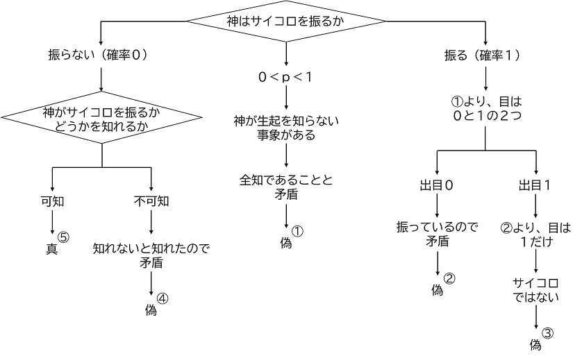

情報量は保存するか
本稿では次の命題を主張する．すなわち，主張：情報量に対しては保存則が成り立つ．ただし，人が全ての情報を得ることはない．なぜなら，情報が充分に得られない事象が無限個存在するからである．
情報とは，終わったもの，つまり，すでに知られ，この世に存在してしまっているものである．つまり，情報を集め続けていればいずれ世界が全てわかる，と思う自由がありうる．しかし，人が情報をこれからも日々新しく発見生産し続けていくとしても，神は世界を常に新しくされる．したがって，人が情報で世界の全てを理解することなどできそうもないと考えるほうが良い．
情報量が保存する，という思想は，同時に人間理性の限度，知性の分限を表す．そのため，情報量は保存しない，と考えると，人の知性を過信することを防げる上，情報を発見ないし生産した知性への敬意や，神への信頼と畏敬を保てる．つまり，情報としてだけでなく，情報を生み出す人，集めて理解する人，情報源を新しく生み出し続ける存在を，常に配慮することができる．情報が人と人，そして神をつなぐのである．
もし情報量が本当に保存するのだとしても，情報量が保存しないと考えて人は生きたほうが良い．情報量が保存するかどうかは，人の限界を意味するゆえ，人の傲慢と悲惨が如実に表れうる，本質的に繊細な問題として理解されるべきである．おそらく，特に信仰がない人々にとって，情報量が保存するという思想が与える影響を，わたしは好ましいと思えない．
現代にあっては，情報は何でも簡単に入手できると思いがちだけれども，そう簡単には得られない情報など無数にあることは，少し考えてみれば理解される．街の中の建造物について，その商業的な歴史，政治的な契約や建造と破壊の記録，関係する個人各様の思いや考えについて，たとえ入手可能な資料を集め，現存する人物から聞き出したとしても，その始めから終わりまで，また，関係先のすべてから充分な情報を得ることなどできそうもないだろう．
また，現代の人は，情報で全てわかると思いがちだけれども，これもそう簡単ではないことも考えると了解されよう．例えば，清掃工場が建設される予定地の土壌に，どのような有害物質がどこにどのくらい分布しており，地下にはそもそもなにが埋まっており，その脇にある公園を含めてどんな植生がどのくらいの数だけ植わっていて，どんな昆虫や菌類がどこにどのくらい棲息しているか，きっと誰も知らない．さらに，それらの物質と生物たちの一体一葉が，日々どのように関係してこの生態系が成立しているか，詳細綿密に知ることができると誰が言えよう．
以上の常識的な議論によって，風向きを推して知れたと思うが，以降は簡単な数学的議論を行う．情報量に保存則が成り立つかについては，群の対称性が存在することを調べればよい．情報量は記号の量としては指数関数的に漸増するだろうけれども，構造的量としては有限であると考える．これを情報量の構造性飽和という．ここでいう構造とは，パターンや傾向や統計を含む，不確実性の予測に資する知識をさす．つまり，構造的量とは，知識あるいはその全体を指す量であると換言できる．この構造的量において，情報量は保存することを以下に示す．
まず，情報量を定義する．はその場に起こること，すなわち事象が起こる確率を表す．情報量は事象，すなわち情報源が起きたとき，次のように表される．
次に，を複素確率と考える．とし，事象の一致を考慮しない関係においての確率と情報量の和とする（一致とは完全な解明を意味する）．ところで，謎とは，情報を得ても解明できない事象のことである．ゼータ関数における点は，事象が起きた点を意味するが，非自明な零点が無限個存在することは，完全に解明され得ない事象，あるいは発見され得ない知識が無限個存在することを意味する．つまり，永遠の謎が無限個存在するということであり，知識にならない，すなわち知り得ない事象が無限個存在するということである．それらは発見されないことが証明できる（そうでなければ，実部がにならない）．ここから，知識には，その情報量が存在するものと，0のものとが存在し，そのいずれであるかは知ることができる．
仮に実部がにならない零点があるとすれば，起こったかどうかが確定できない事象が存在することになり，その事象について情報が充分に得られないことを意味するため，知識の限界を示す点となる．この場合には，情報量の総体が一定であるとの見積りに対して，不定性が生じる（不定性とは，情報が不足しているのか，過剰重複しているのか，あるいは情報が取得不能であるのか，明確にならない性質を意図する）ために，先に定立した命題について論理的に考えると，情報量の総体は一定でなく，情報量は保存しない．しかし，神が自身で起こるか確定できない事象を起こさないことは，神がサイコロを振る確率がゼロであることの証明（2018年の日曜数学Advent Calendarの拙稿参照）により明らかであるから，事象を起こす者が神であるかぎり，ないし事象の生起に神が介在するかぎり，起こったか確定できない事象は存在しない．よって，情報を得ても解明できない事象について，すなわちゼータ関数の非自明な零点における実部の値は必ずになる．
このように考えていくと，人は神を知るか（神知論）という命題や，神は人に起こるかどうかを託したのであって神が起こすのでないか，あるいは神は起こすか起こさないかを決めず，どちらもあり得るように世を造り，人に決められない事象も無限個用意したのか（決定者論），という問題がありうる．これらの問題も，人には情報が得られない問題群であるかもしれない．
以上，確率群に対称性を考慮すると情報量の有無が確定でき，情報量の総体が一定であると言え，情報量に保存則が成り立つ．しかし，情報量がゼロ，すなわち情報が全く得られない事象が存在するため，人は世界に起こる事象に関するすべての情報を獲得ないし解明することができない．この帰結は，リーマン予想が正しいことを導く命題である．なぜなら，仮に予想が誤り，すなわち実部がでない非自明なゼータ零点が存在するならば，情報量が確定できない事象の存在を意味し，情報量が保存量かどうかも確定できないが，神がサイコロを振る確率がゼロであることの証明より，情報量が確定できない事象は存在しない．よって，リーマン予想は正しくなければならず，また，情報量は保存する．■
どのような結果も心情的にはありうると感じられるが，いずれの結果であっても世界にまだ謎があることは事実であるのだから，わたしたち人類にとって永遠の謎が無限個存在していることも同様に確からしい．